Back in 2005 when my book “P is for Peace Garden: A North Dakota Alphabet,” came out, I had five young children. I remember going to the mall with them one day, pushing a stroller, and suddenly coming upon a sign. The sign, near B. Dalton bookstore, was heralding an upcoming book-signing event. I was probably wearing sweats and a ponytail. The woman in the poster looked a lot like me, only she was much more put together. I did a double-take. Wait. That IS me, I realized.
It was a moment of confronting my two selves. The stay-at-home mom, and the professional writer-author. Both personas are real, but one is more real — the everyday Roxane. I embrace each, and am grateful to be both. But they each require, usually anyway, very different head space.
On Friday, 12 years later, this scene was repeated, though in a different store, in front of a different book-launch sign. I’d taken my boys to Barnes and Noble to find a map of the world for my son’s Scout project. Somewhere in the back of my mind, I knew that I’d be at Barnes and Noble Sunday for the launch of my newest children’s book, “The Twelve Days of Christmas in North Dakota,” but I was more intent on finding that map than thinking about what was upcoming.
While I was conversing with a perplexed employee who’d never before been asked to locate a map of the world, my youngest son, now 12 (he was a baby when my first state book came out), went off to browse books. A while later, map in hand, I saw him coming toward me. “Psst, Mom, check your texts.” I looked down at my phone, and looking back at me was this photo.
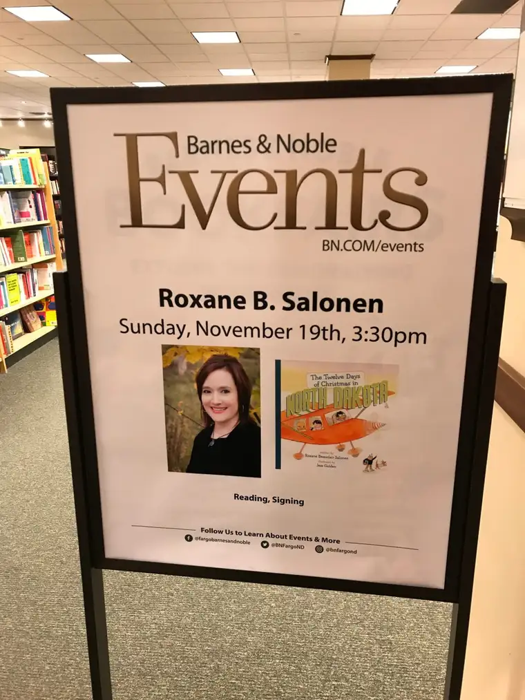
That scene in the mall came back in a flash. I’d done it again. I’d gotten so absorbed in one of my roles that I’d lost track of another — the launch of my book that would take place just a day and a half away!
Of course, I then had to run to find the sign, and have him take a photo of coming attractions. As he snapped this photo, one of the Barnes and Noble employees came by and was looking at us skeptically. I don’t think she realized what was happening either and might have been suspicious we were trying to steal the sign or something!
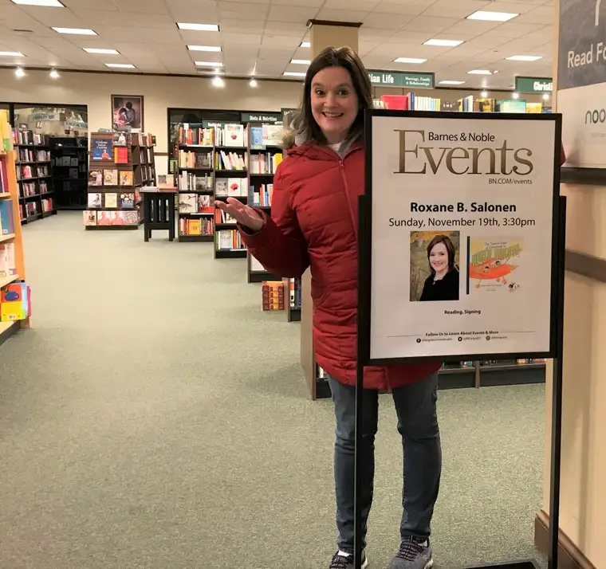
So, yesterday, Sunday, I returned to the store with my professional persona intact, and the several hours I was there turned out to be a joy! So many friends and family members, too, stopped by, making me feel quite loved.
The very first, my good friend Shari, I’ve known since childhood in Poplar, Montana. The first time I rode bareback horse was at her home in the country. Shari wanted me to sign a book for her grandbaby who is about to be born any day now! What an honor. I did an author visit in her town of Rutland, N.D., when her daughter, the one about to give birth, was a young student. My how time flies!
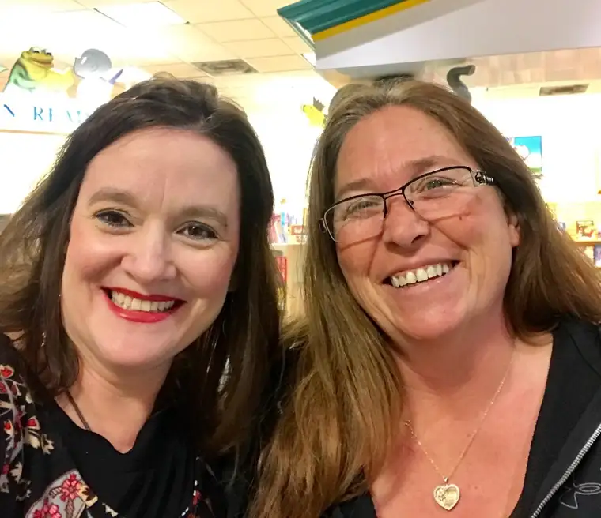
Other special visits came from other friends…
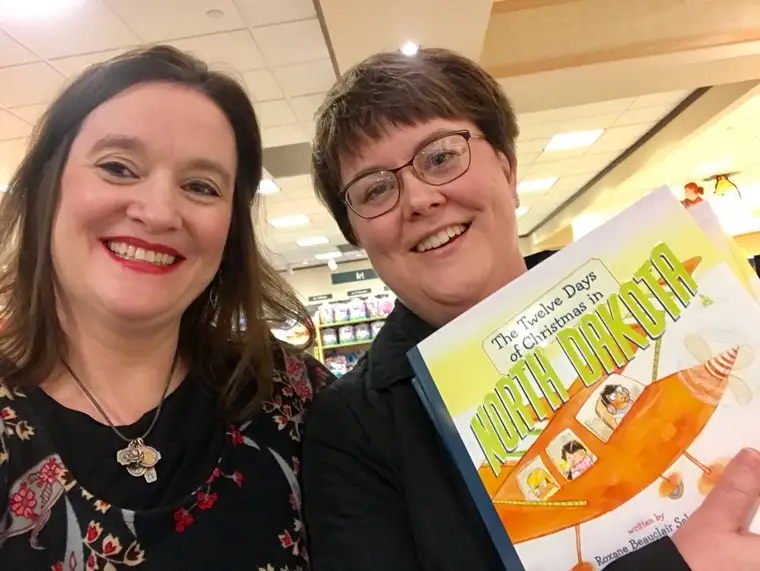
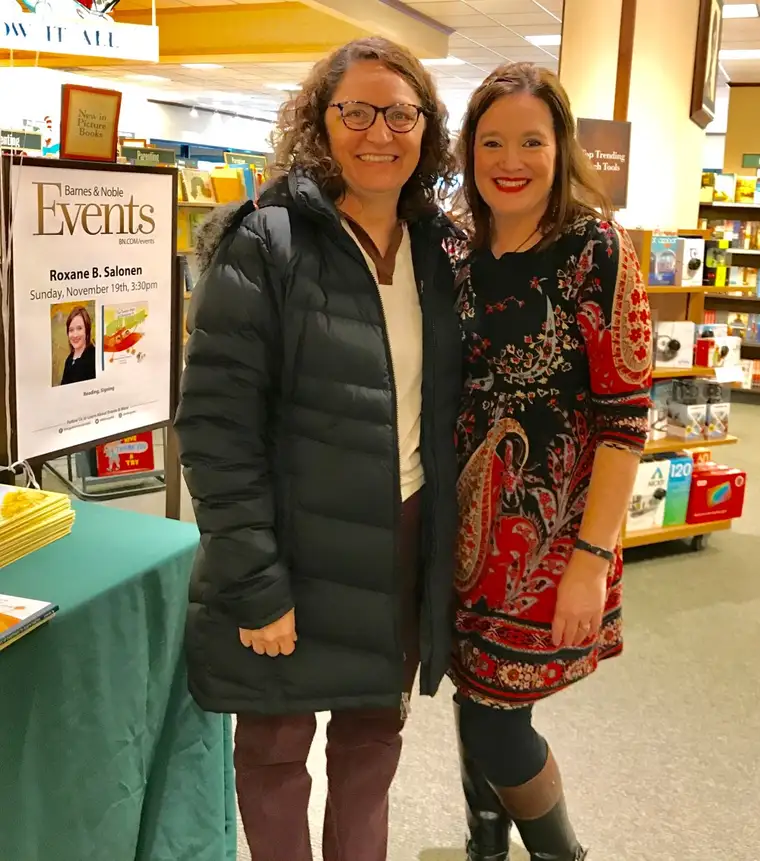
And family members. These three really warmed my heart! Thank you dear cousins for taking time out to make my day, and buy a few books, too.
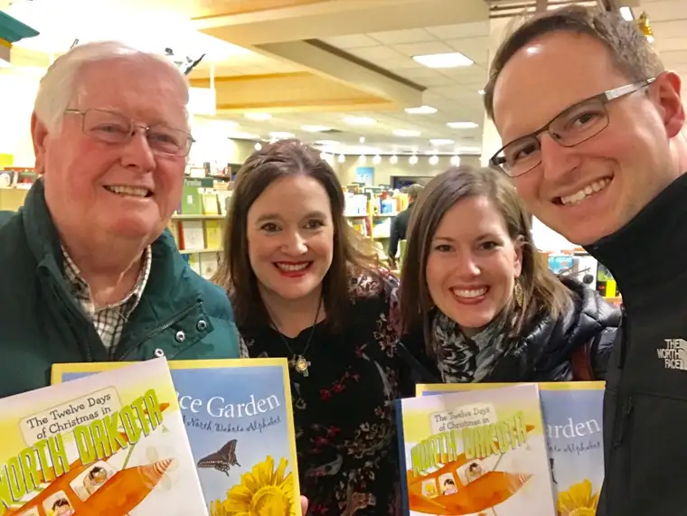
Oh, and I can’t forget to mention these cool dudes…a few of my favorite people.
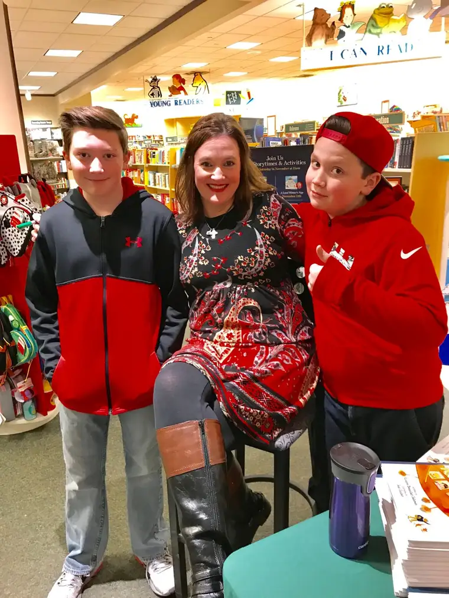
This one too! She was on her way to work but stopped by to give me a hug.
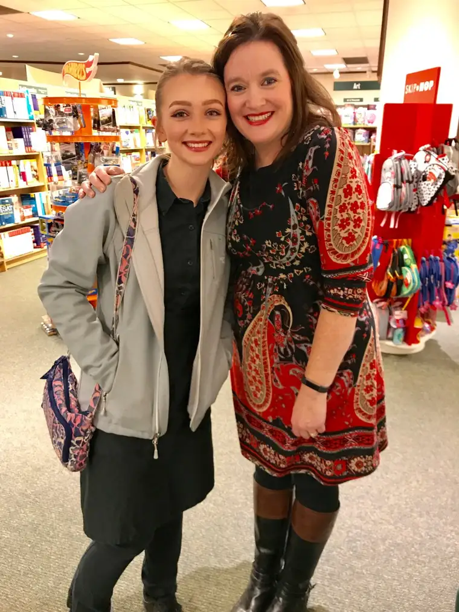
And then there were the strangers who happened by and decided to buy the book. I enjoyed talking with them, and sharing about my love of North Dakota, and what a joy it was to help create this fun children’s picture book.
This little cutie came with my friend Amy, who said she had to “borrow” a child since hers are grown now. I enjoyed meeting this sweet girl, who apparently has her sights on becoming an artist someday. Maybe she’ll illustrate my next book!
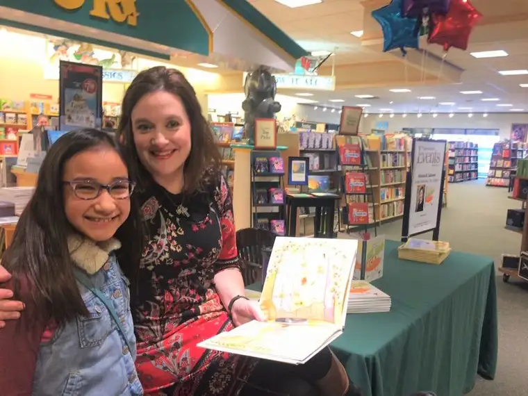
Yes, I felt loved, and honored to promote a book that touts some of the special nooks and crannies of North Dakota, through the adventures of Henry, Piper, and don’t forget Marty the Meadowlark, hat-wearer extraordinaire.
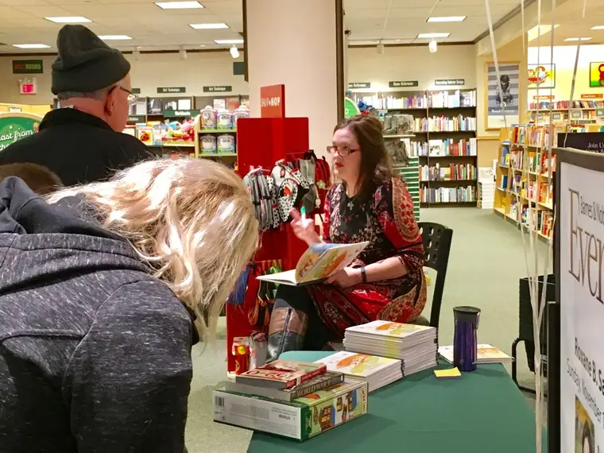
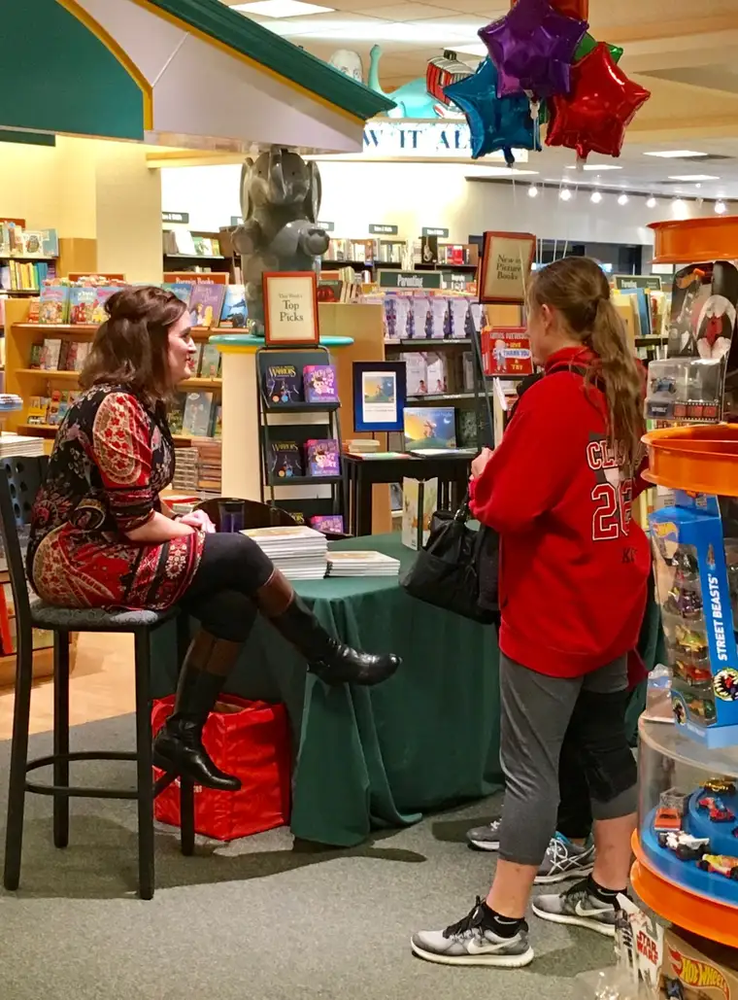
Those who missed Sunday’s launch can still find me out and about at other events before Christmas. This weekend, I’ll be at Vintage Point in Fargo. I love this store, which is full of really cool and creative gifts, many with a North Dakota theme. I’m so happy they’re hosting me for a signing on Small-business Saturday Nov. 25. Every purchase of a book will bring the recipient a free (edible) gift while supplies last!
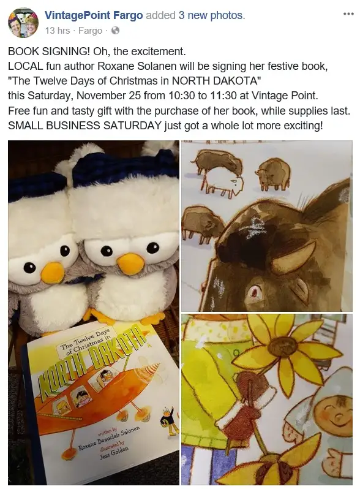
If you aren’t around then but live in the area, consider stopping by the Fargo Public Library on Dec. 12. There will be books there, too, and also, I’ll be doing an author presentation on how I put this book together, and share a little about my life as a writer and author.
If you’re closer to the Bismarck area, I’ll be at the North Dakota Heritage Center from 10:30 to 11:30 a.m. on Monday, Dec. 18, as part of their “Little Kids, Big World” regular offering.
Thanks to all who have supported this book, my work as a writer, and my spiritual life, too, by praying for me along the way. It is an absolute delight to have good people in my circle of love. I treasure you. As we approach Thanksgiving, know, especially now, that you are precious to me.
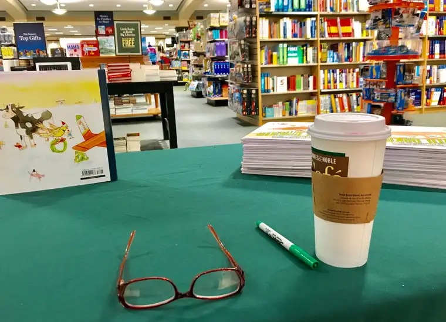
Q4U: What are you thankful for?